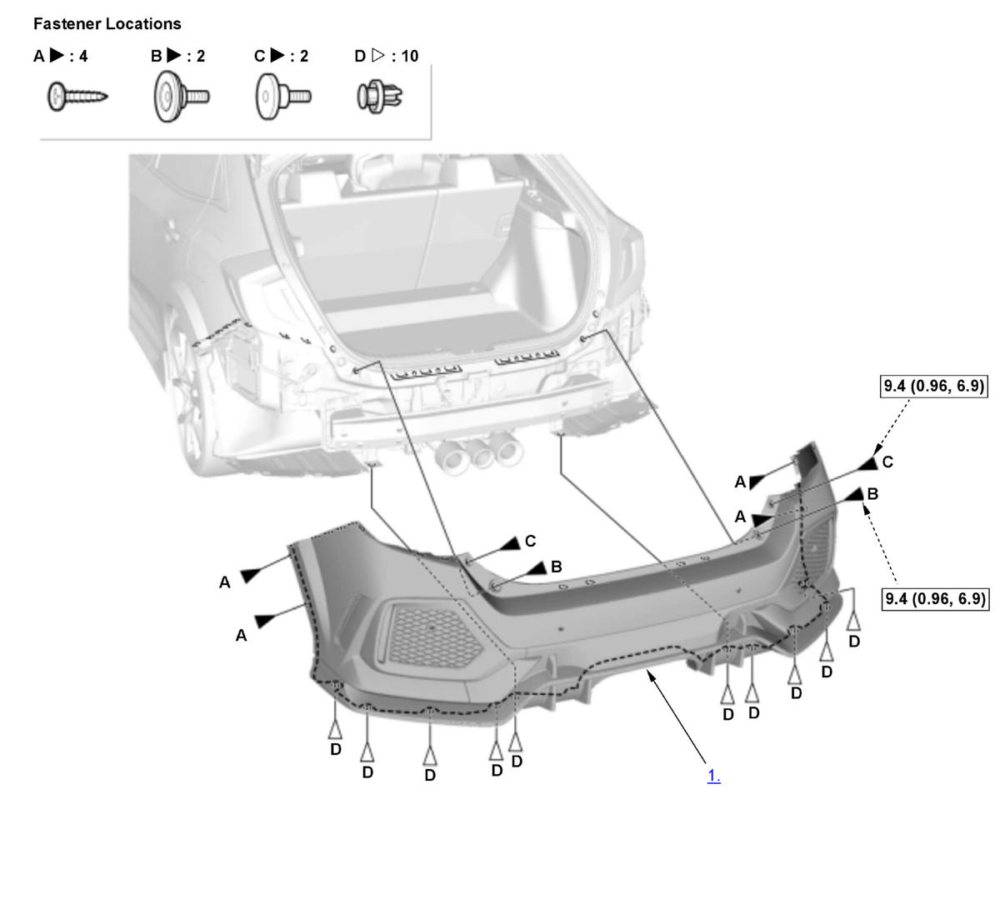

LEMON Manuals
: Even more car manuals for everyone: 1960-2025
Home
>>
Honda
>>
2016
>>
Civic LX, 4D Sedan, Automatic CVT Trans
>>
Repair and Diagnosis (Single Page)
>>
Body & Frame
>>
Exterior/Interior Trim
>>
Exterior Panels / Trim - Service Information
>>
Removal and Installation
>>
Rear Bumper Removal and Installation (Type-R) (2017 2018 2019 2020 2021)
>>
Removal and Installation
>>
Procedure
Removal and Installation: Procedure
NOTE:
Numbered call-outs in figure pertain to list numbers in following procedure.
Fig 1: Exploded View Of Rear Bumper Replacement Components (Type-R 2017-21)

Courtesy of HONDA, U.S.A., INC.
Torque: N.m (kgf.m, lbf.ft)
Rear Bumper - Remove
All Removed Parts - Install
1. Install the parts in the reverse order of removal.